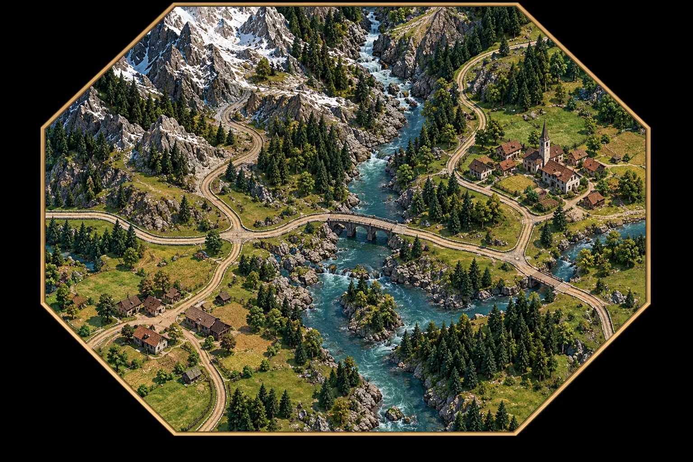
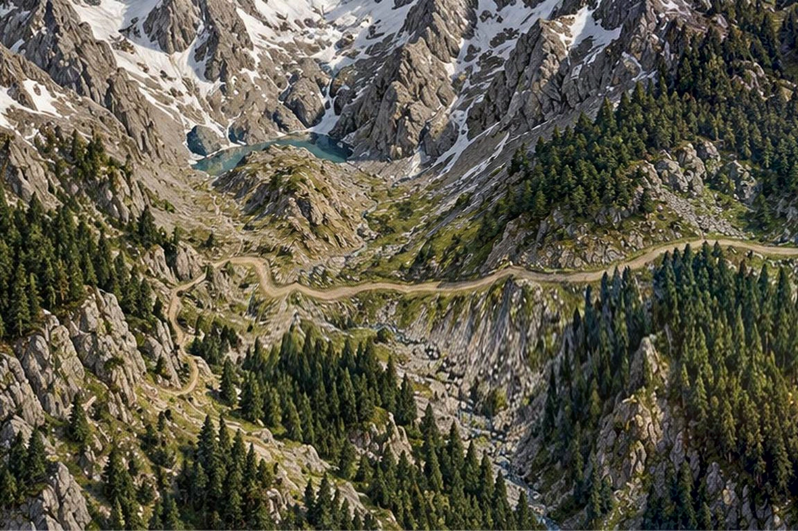
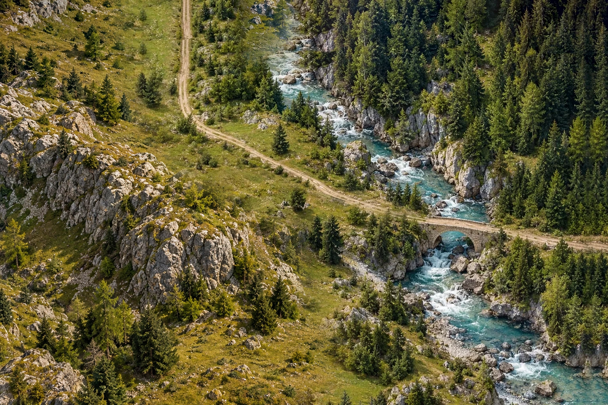

Brenner · Wipptal
Regional terrain · 1780–1880
Campaign: 1780
−
+
Region
Matrei
Terrain art
Approved visual direction and unfinished adjacent art
Source images are art references, not registered geographical scenes. West and South are review versions, not accepted road seams.

Matrei V121: accepted source

West V267: review only

South V267: review only
Back to relief map